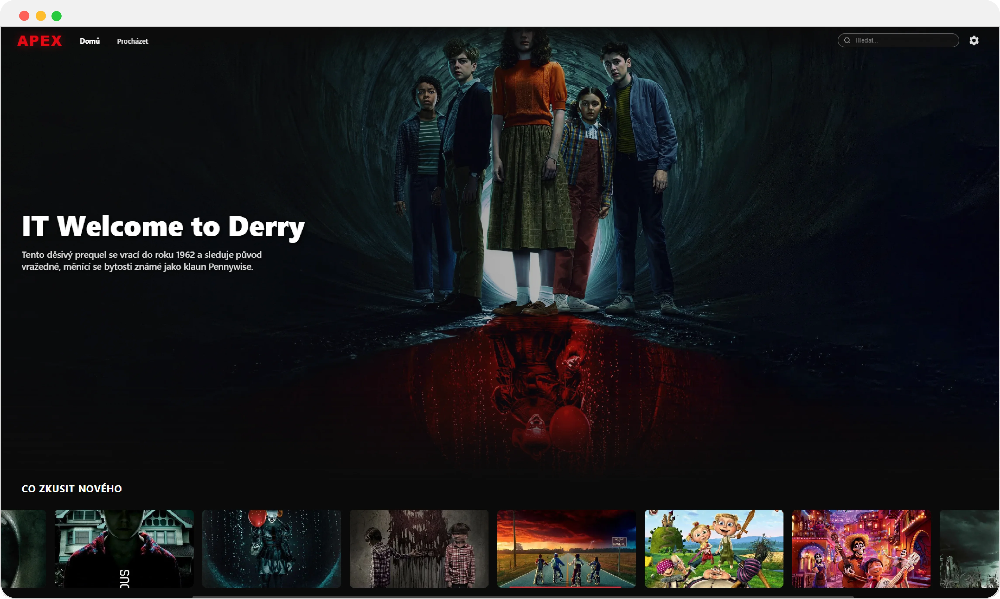
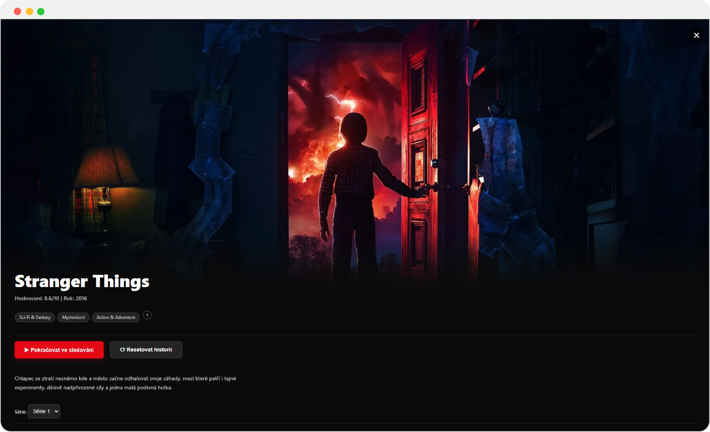

Apex
Konceptuální návrh rozhraní pro streamovací aplikaci. Důraz na přehlednost, typografii a tmavý vizuální styl inspirovaný prémiovými streamovacími platformami.

O projektu
Apex je konceptuální návrh UI pro fiktivní streamovací platformu. Cílem bylo vytvořit čistý, moderní a intuitivní interface s důrazem na obsah — filmy a seriály. Inspirací byly přední světové streamovací služby, ale s vlastním vizuálním jazykem.
Tmavé pozadí, výrazná typografie a dobře zvolená hierarchie prvků zajišťují, že uživatel okamžitě ví, co je důležité a jak se orientovat.
Obrazovky
Domovská stránka

Detail vybraného titulu